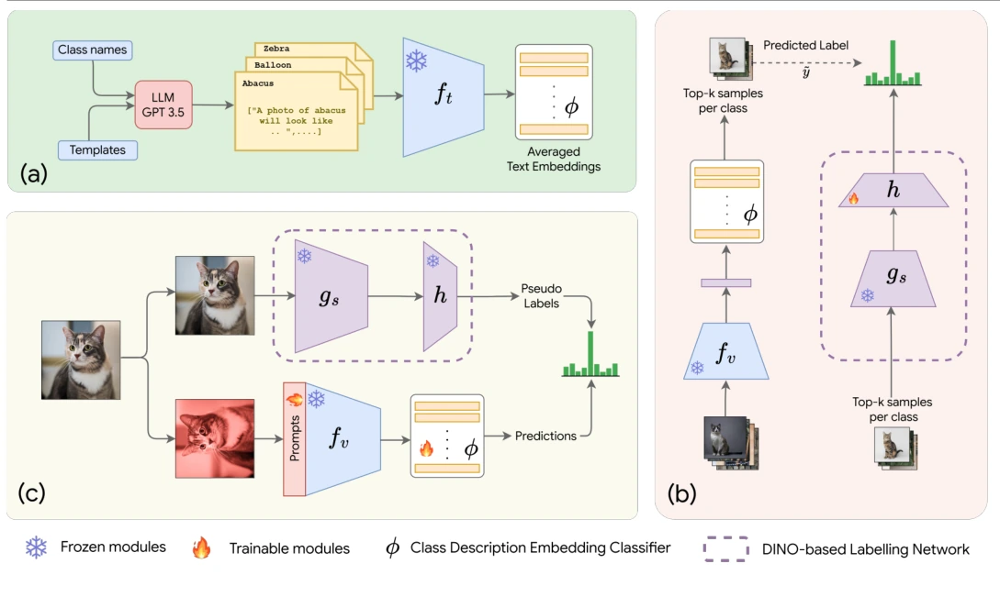
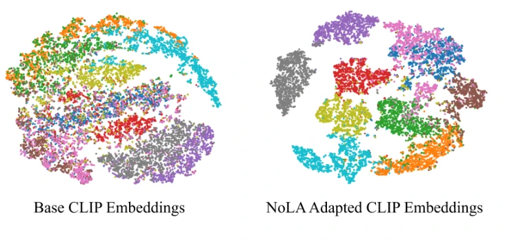

Paper reading notes · BMVC 2025
CLIP Meets DINO, explained simply
How two vision models can teach each other when we have images, class names, and no image labels.
The whole paper in one minute
Imagine two children looking at the same box of pictures.
- CLIP has read many captions. It knows what words such as “forest”, “airplane”, and “cat” mean.
- DINO has become very good at noticing visual patterns. It can tell which pictures look alike, but it does not naturally attach class names to them.
NoLA uses CLIP's language knowledge to give temporary names—pseudo-labels—to some unlabeled images. Those temporary labels teach a small adapter on top of DINO. The adapted DINO model then supplies better pseudo-labels for tuning CLIP's visual prompts.
In short:
CLIP supplies the words. DINO supplies the visual detail. NoLA connects them without manually labeling the target images.
Start here
The knowledge map
Read this map from top to bottom. The top is the idea we want to understand. Each lower row contains only the background needed to make the row above it make sense. The farther we move from NoLA, the less detail we need.
Reading rule: know NoLA's flow clearly; understand what CLIP and DINO contribute; keep only a working intuition for transformers, attention, and tokens.
Context for the root idea
Why does NoLA exist?
A normal image classifier needs many examples such as “this image is a forest” or “this image is a river”. Creating those labels costs time and money.
CLIP can classify images from class names alone, but its visual features are not always ideal for specialised datasets. DINO learns strong visual structure, but it normally needs labeled examples before it can name the groups it sees.
The paper asks whether we can combine their strengths while keeping the target image collection unlabeled.
One step away
CLIP and DINO: the two helpers
CLIP connects pictures to words
Suppose you show someone a photo and three cards labeled “dog”, “bus”, and “pizza”. Even if they have never seen that exact photo, they can choose the card whose meaning best matches it. CLIP does something similar with numbers.
CLIP has two readers:
- A vision transformer turns the picture into an embedding: a numerical summary of what the image seems to contain.
- A language transformer turns each class description—such as “a photo of a dog”—into another embedding.
CLIP compares those summaries. If the image summary is closest to the “dog” summary, CLIP predicts dog. This language connection is why CLIP can attach names to NoLA's unlabeled images.
DINO notices visual structure
Now imagine sorting photographs without reading their captions. You might place furry animals together, separate aircraft from birds, or group objects by shape and texture. DINO learns this kind of visual organisation.
During pretraining, DINO sees different crops or altered views of the same image. A student network learns to agree with a slowly updated teacher network. It therefore learns that two views can show the same underlying object. We do not need the training equations here; for NoLA, the important fact is that nearby DINO embeddings usually represent visually similar images.
The connection: CLIP can say what an image might be. DINO can say which images look alike. NoLA uses both signals instead of trusting either one alone.
Two steps away · intuition is enough
The minimum transformer vocabulary
You do not need to understand transformer mathematics to follow NoLA. These short definitions are enough:
- Token
- A small input piece. A language transformer receives word pieces; a vision transformer receives small image patches.
- Attention
- A mechanism that lets each piece look at other pieces and decide which relationships are useful. In an image, a patch containing an ear may pay attention to patches containing fur and eyes.
- Embedding
- A list of numbers that acts like a location on a meaning map. Similar images or sentences should end up near one another.
- Transformer
- A model that processes tokens using attention. For this article, think of it simply as a reader: one version reads image patches and another reads text tokens.
- Zero-shot classification
- Choosing among class names without first training on labeled examples from the target image collection.
- Pseudo-label
- A model's guess used as a temporary label. It saves human work, but a wrong guess can teach the next model the wrong lesson.
- Adapter
- A small trainable attachment added to a large frozen model—like teaching a translator instead of retraining both speakers.
- Visual prompt
- A few learnable tokens that gently steer a vision transformer toward the current task while the large model stays frozen.
Return to the root idea
Now follow NoLA, step by step
1. Make better class descriptions
Instead of representing “cat” using only the sentence “a photo of a cat”, the method uses several descriptions of what a cat looks like. CLIP converts every description into an embedding. Their average becomes a richer class prototype called the Class Description Embedding (CDE).
2. Give a small set of images temporary labels
The CDE classifier predicts a class for every unlabeled image. NoLA keeps the most confident examples from each class. Keeping the same number per class stops easy or common classes from taking the entire training set.
3. Teach DINO how to use the class names
DINO already produces strong visual features. A small adapter learns to map those features toward the CLIP/CDE class space using the selected pseudo-labels. The DINO backbone stays frozen.
4. Use DINO to tune CLIP
The adapted DINO model predicts labels for weakly augmented images. When a prediction is confident enough, that label supervises CLIP on a strongly augmented version of the same image. Only CLIP's visual prompt tokens are updated.
What is frozen, and what actually learns?
| Component | Role | Updated? |
|---|---|---|
| CLIP text encoder | Turns class descriptions into embeddings | No |
| DINO backbone | Produces visual features | No |
| DINO adapter | Connects DINO features to the class space | Yes |
| CLIP vision backbone | Produces CLIP image features | No |
| CLIP visual prompts | Adapt CLIP to the target collection | Yes |
This is why the method is called parameter-efficient: it trains small additions instead of every parameter in both large models.
What the paper reports
Across eleven datasets using CLIP ViT-B/32, the paper reports:
| Method | Average top-1 accuracy |
|---|---|
| Zero-shot CLIP | 64.7% |
| LaFTer | 73.0% |
| NoLA | 76.6% |
Important: these are values reported by the NoLA authors. They are not results reproduced in this repository yet.
The average is useful, but individual datasets tell a more honest story. NoLA reports a large improvement on the texture dataset DTD, while on EuroSAT it is slightly below LaFTer. A good reproduction should explain both successes and failures.
Read the evidence, not only the caption
How to read the paper's figures and tables
The figures answer three different questions: Does NoLA improve accuracy?, How does information move through the method?, and Do the adapted features look more separable? They are useful only if we also understand what each visual cannot establish.
Figure 1 · accuracy radar chart
Compare points on each spoke—not the coloured area
Each spoke is one dataset, and a point farther from the centre means higher top-1 accuracy. Every coloured outline is a method. The light-blue NoLA outline reaches or approaches the outside on many spokes, giving a quick visual summary of its broad benchmark performance.
What it supportsNoLA is competitive across varied image domains rather than improving only one benchmark.
What to checkUse Table 1 for exact values. Radar polygons overlap, and their total area can make differences look larger than the per-dataset numbers.
Caption detail: Figure 1 says “9 out of 10 datasets”, while the chart, Table 1, and the results text cover eleven datasets and report 9 out of 11. This appears to be a caption inconsistency.
Figure 2 · the method diagram
Read it in build order: (a), then (b), then (c)

- (a) Build the language-side classifier. Class names and question templates go to an LLM. Frozen CLIP text encoding turns the generated descriptions into vectors, which are averaged into one Class Description Embedding (CDE) per class.
- (b) Give DINO access to class names. Frozen CLIP and the CDE classifier score the unlabeled images. The most confident images per class become temporary training examples for the small adapter h on top of frozen DINO.
- (c) Adapt CLIP without changing its large backbone. The trained DINO branch labels a weak view of an image. That pseudo-label supervises the CDE classifier and CLIP visual prompts on a strongly altered view of the same image.
Main reading trickFollow where each pseudo-label comes from. CLIP/CDE teaches the DINO adapter in (b); the adapted DINO branch then teaches prompted CLIP in (c).
What it does not proveThe arrows explain the design, not whether the pseudo-labels are correct. That requires measurements from the experiments.
Figure 3 · EuroSAT t-SNE plots
Separated colour groups are encouraging, but qualitative

On the left, many class colours mix in the base CLIP representation. On the right, NoLA's adapted embeddings form more distinct groups. This is consistent with easier classification because images from the same class appear closer and different classes appear farther apart.
What it supportsNoLA appears to reorganise EuroSAT features into cleaner local class groups.
What it cannot provet-SNE distorts distances, depends on its settings and random seed, and shows only one dataset. Accuracy, calibration, and repeated runs remain necessary.
The colours use class identity to make the evaluation plot readable; they should not be confused with labels supplied during NoLA training.
What each results table is trying to isolate
| Paper table | Question it asks | How to interpret it |
|---|---|---|
| Table 1 Main benchmark | Does NoLA improve label-free classification across datasets? | The eleven-dataset average rises from 64.7% for zero-shot CLIP and 73.0% for LaFTer to 76.6% for NoLA. Read each dataset too: NoLA is not best everywhere. |
| Table 2 Different CLIP backbone | Does the result persist with CLIP ViT-B/16? | NoLA averages 82.9% over six datasets, close to AdaptCLIPZS at 83.0%. The comparison is not supervision-matched: AdaptCLIPZS uses 16 labeled examples per class. |
| Table 3 Design alternatives | Does the DINO-based labelling branch add value? | Full NoLA reaches 80.5%; replacing DINO with CLIP gives 77.8%, and replacing the labelling network with CDE gives 76.2%. This supports the chosen combination, but only as a six-dataset average. |
| Table 4 Trainable parts | Should the visual prompts and CDE classifier both learn? | Training neither, prompts only, and CDE only gives 77.9%, 78.2%, and 79.6%; training both gives 80.5%. Their joint update works best in this ablation. |
| Table 5 Additive pipeline | What happens as components are added in sequence? | The average moves 67.9 → 72.0 → 73.9 → 80.5 as CDE, the DINO labelling network, and prompt learning are added. These are sequential gains, not independent causal contributions. |
| Table 6 Other SSL models | Is DINO the only image-only backbone that helps? | MAE and BEiT also improve over the shown CLIP baseline, averaging 76.6% and 74.9%; DINO is strongest at 80.5%. The idea extends beyond DINO among the tested models. |
| Table 7 LLM descriptions | Do richer GPT-4o descriptions improve the result? | The ten-dataset average increases from 77.77% to 78.49%, a 0.72-point gain, but several individual datasets decline. Better average language descriptions do not help every visual domain. |
Evidence boundary: all values above are reported by the NoLA authors. The diagrams explain the mechanism, while the tables supply the numerical evidence; neither replaces independent reproduction.
Open questions · not predetermined conclusions
What could be explored next?
NoLA reports strong average results, but an average does not tell us why the method succeeds or where it may fail. The useful next step is diagnosis—not choosing a favourite extension in advance.
| Possible weakness | Smallest useful test | Feasibility |
|---|---|---|
| Confident guesses may still be wrong. Domain-shifted images can look unfamiliar to CLIP even when its score is high. |
Measure how often selected pseudo-labels are correct at different confidence levels. Use true labels only for evaluation. | High. Requires predictions and labels for analysis, not a new training method. |
| Hard top-k selection may be brittle. A suitable number of selected images may differ by dataset or class. |
Repeat the same baseline with a few smaller and larger selection budgets while keeping everything else fixed. | High. It is a small controlled sweep once the baseline runs. |
| Results may depend on class descriptions. Some descriptions may help CLIP, while vague or misleading ones may hurt it. |
Compare class names alone, all generated descriptions, and several description subsets. | High. Text embeddings can be computed once and reused. |
| Prompt tuning may reinforce early mistakes. If wrong pseudo-labels supervise CLIP, the final model may become more certain without becoming more correct. |
Compare accuracy and calibration before and after prompt tuning, then inspect which classes gain or lose. | Medium. The metrics are cheap, but a working NoLA training run is required first. |
A sensible decision path: first reproduce one baseline, then run these diagnostics. If confidence errors are the dominant issue, DINO-neighbour agreement becomes one candidate solution. If description sensitivity or selection budget matters more, a simpler intervention may be better.
Research stance: these are plausible questions suggested by the method, not weaknesses already proven by our experiments.
How I recommend reading the paper
- First pass: abstract, Figure 2, conclusion. Only identify the input, three stages, and output.
- Second pass: method section. Track which model creates each pseudo-label and which parameters learn.
- Third pass: Tables 1 and 3–7. Separate average gains from dataset-specific failures.
- Fourth pass: compare the equations with
code/nola-official/trainers/NoLA.py.
The full reading guide includes equation dimensions, code locations, critical questions, and marked exercises.
Video resources
You do not need to watch everything. Use these only when a concept remains unclear after the plain-English sections above.
1. CLIP paper explained
Yannic Kilcher · 48 minutes. Watch this for contrastive image-text training and zero-shot classification.
2. DINO paper explained
Yannic Kilcher · 39 minutes. Watch this for self-distillation and why DINO features contain useful visual structure.
3. Visual Prompt Tuning in five minutes
Menglin Jia · ECCV 2022 · 5 minutes. Watch this before NoLA's final prompt-learning stage.
Files and links
- Paper reading guide — 12-page explanation, equations, code map, and marked exercises.
- Original BMVC 2025 paper — the source paper and supplementary material.
- Official NoLA implementation — upstream authors' repository.